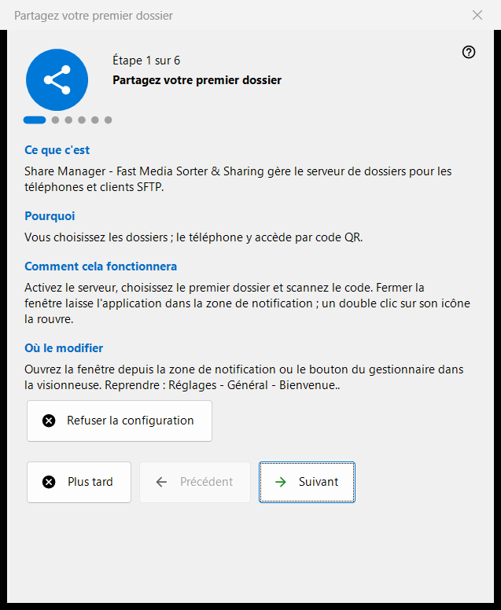
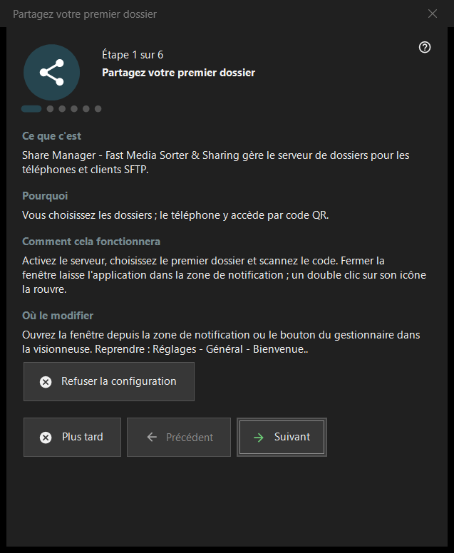

Partagez votre premier dossier
Objectif
Un assistant en six étapes qui mène de rien à un dossier servi à votre téléphone : il active le serveur, choisit le premier dossier, règle le port et les options de base, et se termine par un contrôle de l'état. Il s'ouvre au premier démarrage de Share Manager et peut être relancé depuis les paramètres.


Dans cet ordre
- Lisez l'introduction et appuyez sur «Suivant».
- À l'étape «Activer le serveur», appuyez une fois sur le bouton et confirmez la demande d'administrateur.
- Choisissez le premier dossier et ses options.
- Gardez le port ou changez-le.
- Réglez la langue, le démarrage et les options du réseau local.
- Sur la dernière page, vérifiez l'état, ouvrez le code QR et appuyez sur «Terminer».
Les éléments
Étapes et boutons
Le pied de page affiche «Étape N sur 6». «Précédent» et «Suivant» passent d'une page à l'autre, «Suivant» devient «Terminer» sur la dernière page, «Plus tard» ferme l'assistant en conservant ce que vous avez déjà confirmé, et «Refuser la configuration» le ferme définitivement. Chaque page comporte quatre courts blocs : «Ce que c'est», «Pourquoi», «Comment cela fonctionnera» et «Où le modifier».
Activer le serveur
Jusqu'à cette étape, le serveur est arrêté. Le bouton d'activation demande une fois les droits d'administrateur et ajoute une règle du Pare-feu Windows pour le programme. Si vous annulez la demande, le serveur reste arrêté et vous pouvez réessayer ; s'il est déjà actif, la page indique qu'aucune autre élévation n'est nécessaire.
Premier dossier
Choisissez un dossier, puis son nom, son profil et son accès. «Ajouter la première ressource maintenant..» ouvre l'assistant de ressource. Il faut au moins un dossier pour continuer. Les réglages sont envoyés au serveur, et les dossiers restent modifiables dans la liste de la fenêtre principale.
Port
«Choisi par le système» attribue un port une seule fois et le conserve ; «Port fixe :» vous permet de saisir votre propre numéro, par exemple pour la redirection de port du routeur. Le numéro est écrit dans chaque code QR et chaque fichier .fmscfg, donc le changer plus tard rend inutilisables les codes déjà remis. La règle du pare-feu appartient au programme, pas au port.
Réglages de base
«Langue de l'interface», «Démarrer à l'ouverture de session Windows», «Ouvrir la fenêtre du gestionnaire au démarrage» et «Réseau local uniquement (sans accès Internet)». Le mode réseau local désactive la redirection de port et l'adresse internet. L'option de démarrage de la version du Store se gère dans les paramètres de Windows.
Terminer
La dernière page vérifie le serveur et les dossiers choisis et affiche le résultat ; un état vert signifie qu'un partage fonctionne réellement avec accès aux dossiers. «Code QR pour le téléphone» ouvre le code et «Actualiser» répète la vérification. Si l'état demande de l'attention, corrigez la cause dans la fenêtre principale ou revenez à l'étape du dossier.
Relancer l'assistant
Paramètres - Général - «Bienvenue..» ouvre un menu avec «Reprendre la configuration des dossiers», qui relance cet assistant.
Paramètres du gestionnaire · Paramètres de partage SFTP · Paramètres du serveur d’échange